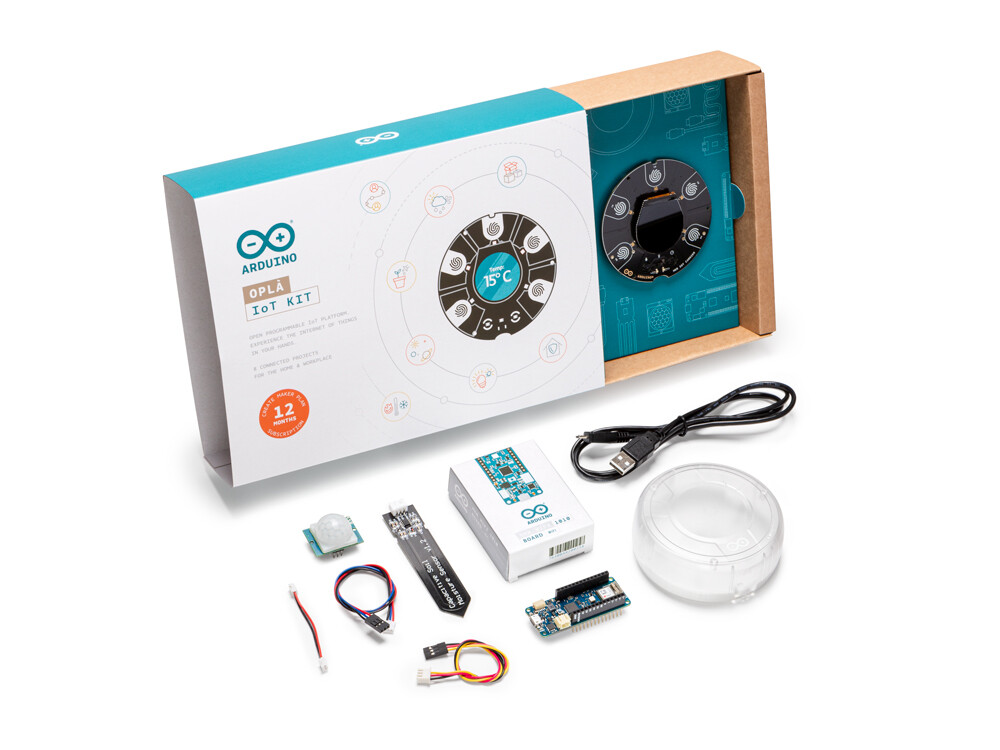

Arduino se mete de lleno en la Internet de las Cosas con su nuevo Oplà IoT Kit
El equipo de desarrollo de Arduino ha vuelto a sorprendernos con un nuevo producto orientado a que cualquiera pueda iniciar proyectos con los que aprovechar las ventajas de la Internet de las Cosas (IoT).
El nuevo Arduino Oplà IoT Kit es un conjunto de componentes con el que podremos crear hasta ocho aplicaciones conectadas que van desde el control remoto de las luces o el termostato o el control del inventario de productos y la gestión inteligente de nuestro jardín.
Una buena forma de iniciarse con proyectos IoT
Como explican en el anuncio oficial, no es necesario soldar componentes para poner en marcha estos proyyectos. El kit consta de un pequeño centro de control circular con una pantalla OLED en color además de sensores de temperatura y botones táctiles capacitivos.
Además de ello tenemos una placa WiFi para dotar al producto de esa conectividad, una carcasa de plástico y varios accesorios como el sensor de movimiento o el de humedad.
En el sitio web oficial podemos encontrar los ocho tutoriales detallados para poner en marcha esos proyectos iniciales, que son los siguientes:
- Control remoto de luces: cambiar el color, los modos de iluminación y el encendido y apagado.
- Estación meteorológica personal: registra y monitoriza las condiciones meteorológicas locales.
- Alarma de seguridad doméstica: detecta movimiento y activa avisos de alarma.
- Seeguimiento del sistema solar: obtiene datos de planetas y lunas del sistema solar.
- Control de inventario: permite gestionar la entrada y salida de productos y alimentos.
- Jardín inteligente: monitoriza y gestiona el entorno de nuestras plantas.
- Control del termostato: control inteligente del sistema de calefacción y aire acondicionado.
- Pensando en ti: envío de mensajes entre el kit y la plataforma en la nube de Arudino IoT Cloud.
En este producto se incluye una suscripción de un año al servicio Arduino Create Maker Plan, que permite desarrollar y compilar en esa plataforma desde cualquier navegador estos proyectos y acceder a todas las opciones de la Arduino IoT Cloud para poner en marcha proyectos aún más ambiciosos.
El nuevo Arduino Oplà IoT Kit está disponible en la tienda oficial de Arduino, donde tiene un precio de 99 euros (impuestos no incluidos).